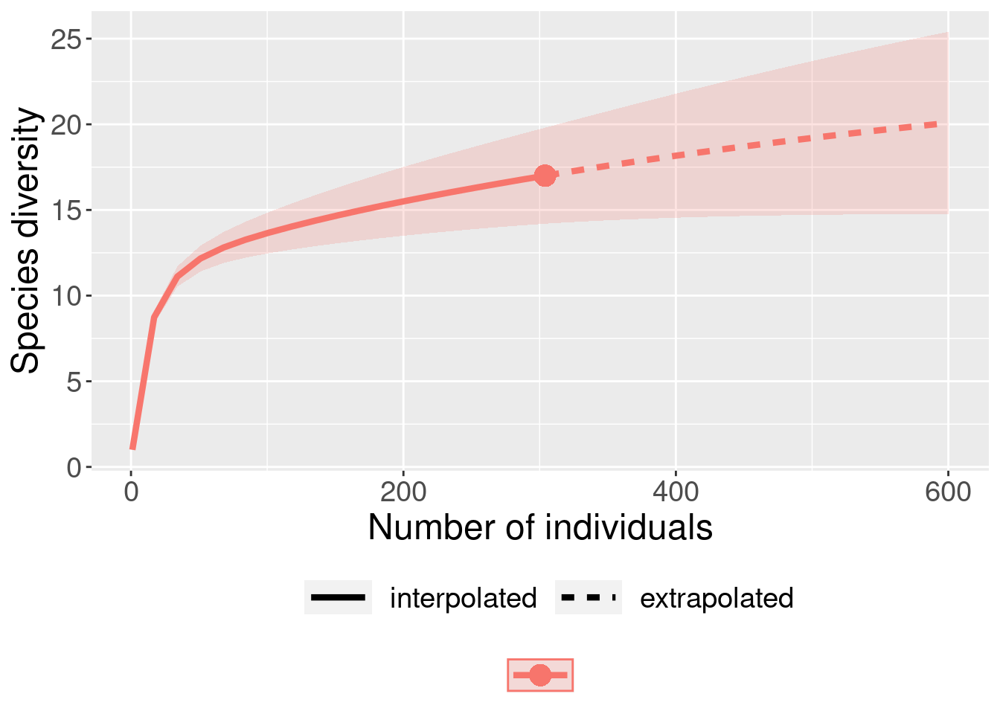

Capítulo8 Estimadores de riqueza
8.1 Backgorund da análise
Uma vez que determinar o número total de espécies numa área é praticamente impossível, principalmente em regiões com alta riqueza de espécies, os estimadores são úteis para extrapolar a riqueza observada e tentar estimar a riqueza total através de uma amostra incompleta de uma comunidade biológica (Walther & Moore 2005). Neste capítulo serão considerados os estimadores não paramétricos que não assumem uma forma de distribuição para a abundância (e.g. distribuições log-serie ou log-normal), mas usam informações da frequencia de espécies raras na comunidade (Gotelli & Chao 2013). Para outros estimadores veja Magurran (2004) e Colwell (2019).
8.1 Quatro características para um bom estimador de riqueza (Chazdon et al. 1998; Horter et al. 2006):
- Independência do tamanho da amostra (quantidade de esforço amostral realizado);
- Insensibilidade a diferentes padrões de distribuições (diferentes equitabilidades);
- Insensibilidade em relação à ordem das amostragens;
- Insensibilidade à heterogeneidade entre as amostras usadas entre estudos.
8.2 Estimadores baseados na abundância das espécies
8.2.1 CHAO 1 - (Chao 1984, 1987):
Estimador simples do número absoluto de espécies em uma comunidade. É baseado no número de espécies raras dentro de uma amostra.
\[Chao_{1} = S_{obs} + \left(\frac{n-1}{n}\right)\frac{F_1(F_1-1)}{2(F_2+1)}\]
onde:
Sobs = o número de espécies na comunidade,
n = número de amostras,
F1 = número de espécies observadas com abundância de um indivíduo (espécies singleton),
F2 = número de espécies observadas com abundância de dois indivíduos (espécies doubletons).
O valor de Chao 1 é máximo quando todas as espécies menos uma são únicas (singleton). Neste caso, a riqueza estimada é aproximadamente o dobro da riqueza observada.
8.2.1.1 Exemplo prático - Chao 1
8.2.1.1.1 Explicação dos dados
Neste exemplo usaremos os dados de 17 espécies de anuros amostradas em 14 dias de coletas de campo em um habitat reprodutivo localizado na região noroeste do estado de São Paulo, Brasil.
Pergunta:
Quantas espécies a mais poderiam ser amostradas caso aumentasse o esforço amostral?
Predições
- O número de espécies estimadas é similar ao número de espécies observada;
- O número de espécies estimadas é maior do que o número de espécies observada.
Variáveis
- Variáveis preditoras
- matriz ou vetor com as abundâncias das espécies de anuros registradas em uma habitat reprodutivo
Checklist
- Verificar se a sua matriz está com as espécies nas colunas e as amostragens nas linhas
- Verificar se os dados são de abundância e não presença e ausência
8.2.2 Análise
Calculo do estimador de riqueza - Chao 1
## Loading required package: permute## Loading required package: lattice## This is vegan 2.5-6## Warning in sqrt(sum(Deriv.Ch1 %*% t(Deriv.Ch1) * (diag(a) - a %*% t(a)/S.ACE))):
## NaNs produced
## Warning in sqrt(sum(Deriv.Ch1 %*% t(Deriv.Ch1) * (diag(a) - a %*% t(a)/S.ACE))):
## NaNs produced
## Warning in sqrt(sum(Deriv.Ch1 %*% t(Deriv.Ch1) * (diag(a) - a %*% t(a)/S.ACE))):
## NaNs produced
## Warning in sqrt(sum(Deriv.Ch1 %*% t(Deriv.Ch1) * (diag(a) - a %*% t(a)/S.ACE))):
## NaNs produced
## Warning in sqrt(sum(Deriv.Ch1 %*% t(Deriv.Ch1) * (diag(a) - a %*% t(a)/S.ACE))):
## NaNs produced
## Warning in sqrt(sum(Deriv.Ch1 %*% t(Deriv.Ch1) * (diag(a) - a %*% t(a)/S.ACE))):
## NaNs produced
## Warning in sqrt(sum(Deriv.Ch1 %*% t(Deriv.Ch1) * (diag(a) - a %*% t(a)/S.ACE))):
## NaNs produced
## Warning in sqrt(sum(Deriv.Ch1 %*% t(Deriv.Ch1) * (diag(a) - a %*% t(a)/S.ACE))):
## NaNs produced
## Warning in sqrt(sum(Deriv.Ch1 %*% t(Deriv.Ch1) * (diag(a) - a %*% t(a)/S.ACE))):
## NaNs produced
## Warning in sqrt(sum(Deriv.Ch1 %*% t(Deriv.Ch1) * (diag(a) - a %*% t(a)/S.ACE))):
## NaNs produced## $chao
## N Chao 2.5% 97.5% Std.Dev
## Dia_13 1 6.586667 3.000 12.33333 2.976029
## Dia_7 2 9.752667 6.000 17.00000 3.164114
## Dia_11 3 11.174500 7.000 16.76250 2.863219
## Dia_5 4 12.701667 8.000 20.00000 2.935597
## Dia_6 5 13.576667 9.000 20.00000 2.834019
## Dia_2 6 14.620000 10.000 20.00000 2.532070
## Dia_9 7 15.033333 10.475 20.00000 2.450177
## Dia_8 8 15.995000 12.000 22.00000 2.910125
## Dia_10 9 16.608333 12.000 22.00000 2.923297
## Dia_1 10 17.570000 12.475 22.00000 2.892013
## Dia_4 11 18.450000 14.000 22.00000 2.458237
## Dia_12 12 19.015000 14.500 22.00000 2.305521
## Dia_14 13 19.505000 15.500 22.00000 1.610406
## Dia_3 14 20.000000 20.000 20.00000 0.000000
##
## attr(,"class")
## [1] "summary.poolaccum"Visualizar os resultados com intervalo de confiança de 95%.
library(ggplot2)
# preparando os dados para fazer o gráfico
resultados <- summary(est_chao1, display = c("S", "chao"))
res_chao <- cbind(resultados$chao[,1:4], resultados$S[,2:4])
res_chao <- as.data.frame(res_chao)
colnames(res_chao) <- c("Amostras", "Chao", "C_inferior", "C_superior", "Riqueza",
"R_inferior", "R_superior")
# comando para o gráfico
ggplot(res_chao, aes(y = Riqueza, x = Amostras)) +
geom_point(aes(y = Chao, x = Amostras + 0.1), size = 5, color = "blue", alpha = 1) +
geom_point(aes(y = Riqueza, x = Amostras), size = 5, color = "red", alpha = 1) +
geom_line (aes(y = Chao, x = Amostras), color = "blue") +
geom_line (aes(y = Riqueza, x = Amostras), color = "red") +
geom_linerange(aes(ymin = C_inferior, ymax = C_superior, x = Amostras + 0.1),
color = "blue") +
geom_linerange(aes(ymin = R_inferior, ymax = R_superior, x = Amostras), color = "red") +
ylab ("Estimador de riqueza - Chao 1") +
xlab ("Número de amostras") +
scale_x_continuous(limits = c(1,15), breaks=seq(1,15,1)) +
geom_point(y= 7.5, x = 9, size = 5, color = "blue", alpha = 1) +
geom_point(y= 5.9, x = 9, size = 5, color = "red", alpha = 1) +
geom_label( y = 7.5, x = 12, label = "Riqueza estimada - Chao 1") +
geom_label( y = 5.9, x = 11.3, label = "Riqueza observada")8.2.2.1 Interpretação dos resultados
Com base no número de espécies raras (singletons e doubletons), o estimador Chao 1 indica a possibilidade de encontrarmos mais três espécies caso o esforço amostral fosse maior e não mostra tendência de estabilização da curva em uma assíntota.
8.2.3 ACE - Abundance-based Coverage Estimador (Chao & Lee 1992, Chao et al. 2000):
Este método trabalha com a abundância das espécies raras (i.e. abundância baixa). Entretanto, diferente do estimador anterior, esse método permite ao pesquisador determinar os limites para os quais uma espécie seja considerada rara. Em geral, são consideradas raras espécies com abundância entre 1 e 10 indivíduos. A riqueza estimada pode variar conforme se aumente ou diminua o limiar de abundância, e infelizmente não existem critérios biológicos definidos para a escolha do melhor intervalo.
\[ACE = S_{abund} + \frac{S_{rare}}{C_{ace}} + \frac{F_1}{C_{ace}}Y_{ace}^2\]
onde:
\[Y_{ace}^2 = max \left[\frac{S_{rare}}{C_{ace}}\frac{\sum_{i=i}^{10}i(i-1)F1}{(N_{rare})({N_{rare} - 1)}}-1,0\right]\]
\[C_{ace} = 1 - \frac{F1}{N_{rare}}\]
\[N_{rare} = \sum_{i=1}^{10}iF_i\]
Não precisa fazer cara feia, é óbvio que iremos usar o programa para fazer esses cálculos.
8.2.3.1 Exemplo prático - ACE
8.2.3.1.1 Explicação dos dados
Usaremos os mesmos dados de 17 espécies de anuros amostradas em 14 dias de coletas de campo em um habitat reprodutivo localizado na região noroeste do estado de São Paulo, Brasil.
Pergunta:
Quantas espécies a mais poderiam ser amostradas caso aumentasse o esforço amostral?
Predições
- O número de espécies estimadas é similar ao número de espécies observada;
- O número de espécies estimadas é maior do que o número de espécies observada.
Variáveis
- Variáveis preditoras
- matriz ou vetor com as abundâncias das espécies de anuros registradas em uma habitat reprodutivo
Checklist
- Verificar se a sua matriz está com as espécies nas colunas e as amostragens nas linhas
- Verificar se os dados são de abundância e não presença e ausência
8.2.4 Análise
Calculo do estimador de riqueza - ACE
## Warning in sqrt(sum(Deriv.Ch1 %*% t(Deriv.Ch1) * (diag(a) - a %*% t(a)/S.ACE))):
## NaNs produced
## Warning in sqrt(sum(Deriv.Ch1 %*% t(Deriv.Ch1) * (diag(a) - a %*% t(a)/S.ACE))):
## NaNs produced
## Warning in sqrt(sum(Deriv.Ch1 %*% t(Deriv.Ch1) * (diag(a) - a %*% t(a)/S.ACE))):
## NaNs produced
## Warning in sqrt(sum(Deriv.Ch1 %*% t(Deriv.Ch1) * (diag(a) - a %*% t(a)/S.ACE))):
## NaNs produced
## Warning in sqrt(sum(Deriv.Ch1 %*% t(Deriv.Ch1) * (diag(a) - a %*% t(a)/S.ACE))):
## NaNs produced## $ace
## N ACE 2.5% 97.5% Std.Dev
## Dia_2 1 6.890639 3.545190 13.71429 2.582588
## Dia_8 2 9.917820 6.000000 16.67297 3.017484
## Dia_6 3 11.591750 8.000000 18.08017 2.701421
## Dia_9 4 12.947647 9.000000 19.19145 2.733790
## Dia_7 5 13.863085 9.099849 19.93931 2.851266
## Dia_4 6 14.942018 9.625052 21.08163 2.934327
## Dia_13 7 15.684708 11.128799 21.63119 2.927874
## Dia_11 8 16.622877 12.165910 23.05330 2.999926
## Dia_14 9 18.406229 13.400199 24.75556 3.566461
## Dia_10 10 19.896710 13.585218 25.09679 3.770688
## Dia_5 11 21.781648 14.111321 25.72368 3.784506
## Dia_12 12 23.246260 16.798993 25.72368 2.896546
## Dia_3 13 24.151134 17.676471 25.72368 2.035167
## Dia_1 14 24.703704 24.703704 24.70370 0.000000
##
## attr(,"class")
## [1] "summary.poolaccum"Visualizar os resultados com intervalo de confiança de 95%
library(ggplot2)
# preparando os dados para fazer o gráfico
resultados_ace <- summary(est_ace, display = c("S", "ace"))
res_ace <- cbind(resultados_ace$ace[,1:4], resultados_ace$S[,2:4])
res_ace <- as.data.frame(res_ace)
colnames(res_ace) <- c("Amostras", "ACE", "ACE_inferior", "ACE_superior", "Riqueza",
"R_inferior", "R_superior")
# comando para o gráfico
ggplot(res_ace, aes(y = Riqueza, x = Amostras)) +
geom_point(aes(y = ACE, x = Amostras + 0.1), size = 5, color = "blue", alpha = 1) +
geom_point(aes(y = Riqueza, x = Amostras), size = 5, color = "red", alpha = 1) +
geom_line (aes(y = ACE, x = Amostras), color = "blue") +
geom_line (aes(y = Riqueza, x = Amostras), color = "red") +
geom_linerange(aes(ymin = ACE_inferior, ymax = ACE_superior, x = Amostras + 0.1),
color = "blue") +
geom_linerange(aes(ymin = R_inferior, ymax = R_superior, x = Amostras), color = "red") +
ylab ("Estimador de riqueza - ACE") +
xlab ("Número de amostras") +
scale_x_continuous(limits = c(1,15), breaks=seq(1,15,1)) +
geom_point(y= 7.5, x = 9, size = 5, color = "blue", alpha = 1) +
geom_point(y= 5.9, x = 9, size = 5, color = "red", alpha = 1) +
geom_label( y = 7.5, x = 11.7, label = "Riqueza estimada - ACE") +
geom_label( y = 5.9, x = 11.3, label = "Riqueza observada")8.2.4.1 Interpretação dos resultados
Com base no número de espécies raras (abundância menor que 10 indivíduos - default), o estimador ACE indica a possibilidade de encontrarmos mais sete espécies caso o esforço amostral fosse maior e não mostrou tendência de estabilição da curva em uma assíntota.
8.3 Estimadores baseados na incidência das espécies
8.3.1 CHAO 2 - (Chao 1987):
De acordo com Anne Chao, o estimador Chao 1 pode ser modificado para uso com dados de presença/ausência levando em conta a distribuição das espécies entre amostras. Neste caso é necessário somente conhecer o número de espécies encontradas em somente uma amostra e o número de espécies encontradas exatamente em duas amostras. Essa variação ficou denominada como Chao 2:
\[Chao_{2} = S_{obs} + \left(\frac{m-1}{m}\right)\left(\frac{Q_1(Q_1-1)}{2(Q_2 + 1}\right)\]
onde:
Sobs = o número de espécies na comunidade,
m = número de amostragens,
Q1 = número de espécies observadas em uma amostragem (espécies uniques),
Q2 = número de espécies observadas em duas amostragens (espécies duplicates).
O valor de Chao2 é máximo quando as espécies menos uma são únicas (uniques). Neste caso, a riqueza estimada é aproximadamente o dobro da riqueza observada. Colwell & Coddington (1994) encontraram que o valor de Chao 2 mostrou ser o estimador menos enviesado para amostras com tamanho pequeno.
8.3.1.1 Exemplo prático - Chao 2
8.3.1.1.1 Explicação dos dados
Usaremos os mesmos dados de 17 espécies de anuros amostradas em 14 dias de coletas de campo em um habitat reprodutivo localizado na região noroeste do estado de São Paulo, Brasil.
Pergunta:
Quantas espécies a mais poderiam ser amostradas caso aumentasse o esforço amostral?
Predições
- O número de espécies estimadas é similar ao número de espécies observada;
- O número de espécies estimadas é maior do que o número de espécies observada.
Variáveis
- Variáveis preditoras
- matriz ou vetor com a incidência das espécies de anuros registradas em uma habitat reprodutivo
Checklist
- Verificar se a sua matriz está com as espécies nas colunas e as amostragens nas linhas
8.3.2 Análise
Calculo do estimador de riqueza - Chao 2
library(vegan)
dados_coleta <- poca_anuros
est_chao2 <- poolaccum(dados_coleta, permutations = 100)
summary(est_chao2, display = "chao")## $chao
## N Chao 2.5% 97.5% Std.Dev
## [1,] 3 13.57491 8.060833 23.52500 3.818839
## [2,] 4 15.16394 9.138281 26.82812 5.011067
## [3,] 5 16.87993 9.942500 33.41000 5.902481
## [4,] 6 18.77306 11.336806 35.94167 6.527192
## [5,] 7 19.97414 12.196429 37.00000 6.487362
## [6,] 8 21.31245 11.645312 34.37500 6.284936
## [7,] 9 22.86481 13.592593 38.77778 6.724967
## [8,] 10 24.59300 13.847500 39.05000 7.087076
## [9,] 11 26.78318 16.542045 39.27273 6.878578
## [10,] 12 28.77042 18.382292 39.45833 5.980668
## [11,] 13 31.27538 22.384615 39.61538 4.911191
## [12,] 14 33.71429 33.714286 33.71429 0.000000
##
## attr(,"class")
## [1] "summary.poolaccum"Visualizar os resultados com intervalo de confiança de 95%
library(ggplot2)
# preparando os dados para fazer o gráfico
resultados_chao2 <- summary(est_chao2, display = c("S", "chao"))
res_chao2 <- cbind(resultados_chao2$chao[,1:4], resultados_chao2$S[,2:4])
res_chao2 <- as.data.frame(res_chao2)
colnames(res_chao2) <- c("Amostras", "Chao2", "C_inferior", "C_superior", "Riqueza",
"R_inferior", "R_superior")
# comando para o gráfico
ggplot(res_chao2, aes(y = Riqueza, x = Amostras)) +
geom_point(aes(y = Chao2, x = Amostras + 0.1), size = 5, color = "blue", alpha = 1) +
geom_point(aes(y = Riqueza, x = Amostras), size = 5, color = "red", alpha = 1) +
geom_line (aes(y = Chao2, x = Amostras), color = "blue") +
geom_line (aes(y = Riqueza, x = Amostras), color = "red") +
geom_linerange(aes(ymin = C_inferior, ymax = C_superior, x = Amostras + 0.1),
color = "blue") +
geom_linerange(aes(ymin = R_inferior, ymax = R_superior, x = Amostras), color = "red") +
ylab ("Estimador de riqueza - Chao 2") +
xlab ("Número de amostras") +
scale_x_continuous(limits = c(1,15), breaks=seq(1,15,1)) +
geom_point(y= 9.8, x = 10, size = 5, color = "blue", alpha = 1) +
geom_point(y= 7.7, x = 10, size = 5, color = "red", alpha = 1) +
geom_label( y = 9.8, x = 12.95, label = "Riqueza estimada - Chao 2") +
geom_label( y = 7.7, x = 12.3, label = "Riqueza observada")8.3.2.1 Interpretação dos resultados
Com base no número de espécies raras (uniques e duplicates), Chao 2 estimou a possibilidade de encontrarmos mais dezesseis espécies caso o esforço amostral fosse maior e não mostrou tendência de estabilização da curva em uma assíntota.
8.3.3 JACKKNIFE 1 (Burnham & Overton 1978, 1979):
Este estimador baseia-se no número de espécies que ocorrem em somente uma amostra (Q1).
\[S_{jack1} = S_{obs} + Q1\left(\frac{m - 1}{m}\right)\]
onde:
Sobs = o número de espécies na comunidade,
Q1 = número de espécies observadas em uma amostragem (espécies uniques),
m = número de amostragens.
Palmer (1990) verificou que Jackknife 1 foi o estimador mais preciso e menos enviesado comparado a outros métodos de extrapolação.
8.3.3.1 Exemplo prático - Jackknife 1
8.3.3.1.1 Explicação dos dados
Usaremos os mesmos dados de 17 espécies de anuros amostradas em 14 dias de coletas de campo em um habitat reprodutivo localizado na região noroeste do estado de São Paulo, Brasil.
Pergunta:
Quantas espécies a mais poderiam ser amostradas caso aumentasse o esforço amostral?
Predições
- O número de espécies estimadas é similar ao número de espécies observada;
- O número de espécies estimadas é maior do que o número de espécies observada.
Variáveis
- Variáveis preditoras
- matriz ou vetor com as abundâncias das espécies de anuros registradas em uma habitat reprodutivo
Checklist
- Verificar se a sua matriz está com as espécies nas colunas e as amostragens nas linhas
8.3.4 Análise
Calculo do estimador de riqueza - Jackknife 1
library(vegan)
dados_coleta <- poca_anuros
est_jack1 <- poolaccum(dados_coleta, permutations = 100)
summary(est_jack1, display = "jack1")## $jack1
## N Jackknife 1 2.5% 97.5% Std.Dev
## [1,] 3 13.73667 8.82500 19.33333 2.738631
## [2,] 4 14.61750 9.75000 19.25000 2.843221
## [3,] 5 15.40800 9.80000 22.02000 3.149080
## [4,] 6 16.04333 11.66667 21.83333 2.885256
## [5,] 7 17.07143 12.26429 22.07500 2.923155
## [6,] 8 17.91750 12.75000 22.70937 3.009571
## [7,] 9 18.70111 12.77778 23.68889 2.990808
## [8,] 10 19.44700 13.80000 24.20000 2.955100
## [9,] 11 20.42909 14.81818 23.36364 2.659428
## [10,] 12 21.05833 14.83333 23.41667 2.217878
## [11,] 13 21.79308 18.69231 23.46154 1.448566
## [12,] 14 22.57143 22.57143 22.57143 0.000000
##
## attr(,"class")
## [1] "summary.poolaccum"Visualizar os resultados com 95% intervalo de confiança
library(ggplot2)
# preparando os dados para fazer o gráfico
resultados_jack1 <- summary(est_jack1, display = c("S", "jack1"))
res_jack1 <- cbind(resultados_jack1$jack1[,1:4], resultados_jack1$S[,2:4])
res_jack1 <- as.data.frame(res_jack1)
colnames(res_jack1) <- c("Amostras", "JACK1", "JACK1_inferior", "JACK1_superior", "Riqueza",
"R_inferior", "R_superior")
# comando para o gráfico
ggplot(res_jack1, aes(y = Riqueza, x = Amostras)) +
geom_point(aes(y = JACK1, x = Amostras + 0.1), size = 5, color = "blue", alpha = 1) +
geom_point(aes(y = Riqueza, x = Amostras), size = 5, color = "red", alpha = 1) +
geom_line (aes(y = JACK1, x = Amostras), color = "blue") +
geom_line (aes(y = Riqueza, x = Amostras), color = "red") +
geom_linerange(aes(ymin = JACK1_inferior, ymax = JACK1_superior, x = Amostras + 0.1),
color = "blue") +
geom_linerange(aes(ymin = R_inferior, ymax = R_superior, x = Amostras), color = "red") +
ylab ("Estimador de riqueza - Jackknife 1") +
xlab ("Número de amostras") +
scale_x_continuous(limits = c(1,15), breaks=seq(1,15,1)) +
geom_point(y= 9.9, x = 9, size = 5, color = "blue", alpha = 1) +
geom_point(y= 8.6, x = 9, size = 5, color = "red", alpha = 1) +
geom_label( y = 9.9, x = 12.5, label = "Riqueza estimada - Jackknife 1") +
geom_label( y = 8.6, x = 11.5, label = "Riqueza observada")8.3.4.1 Interpretação dos resultados
Com base no número de espécies raras, o estimador Jackknife 1 calculou a possibilidade de encontrarmos mais seis espécies caso o esforço amostral fosse maior e não mostrou tendência de estabilização da curva em uma assíntota.
8.3.5 JACKKNIFE 2 (Burnham & Overton 1978, 1979, Palmer 1991):
Este método basea-se no número de espécies que ocorrem em apenas uma amostra e no número de espécies que ocorrem em exatamente duas amostras.
\[S_{jack2} = S_{obs} + \left[\frac{Q_1(2m - 3)}{m}-\frac{Q_2(m - 2)^2}{m(m-1)}\right]\]
onde:
Sobs = o número de espécies na comunidade,
m = número de amostragens,
Q1 = número de espécies observadas em uma amostragem (espécies uniques),
Q2 = número de espécies observadas em duas amostragens (espécies duplicates).
8.3.5.1 Exemplo prático - Jackknife 2
8.3.5.1.1 Explicação dos dados
Usaremos os mesmos dados de 17 espécies de anuros amostradas em 14 dias de coletas de campo em um habitat reprodutivo localizado na região noroeste do estado de São Paulo, Brasil.
Pergunta:
Quantas espécies a mais poderiam ser amostradas caso aumentasse o esforço amostral?
Predições
- O número de espécies estimadas é similar ao número de espécies observada;
- O número de espécies estimadas é maior do que o número de espécies observada.
Variáveis
- Variáveis preditoras
- matriz ou vetor com as abundâncias das espécies de anuros registradas em uma habitat reprodutivo
Checklist
- Verificar se a sua matriz está com as espécies nas colunas e as amostragens nas linhas
8.3.6 Análise
Calculo do estimador de riqueza - Jackknife 2
library(vegan)
dados_coleta <- poca_anuros
est_jack2 <- poolaccum(dados_coleta, permutations = 100)
summary(est_jack2, display = "jack2")## $jack2
## N Jackknife 2 2.5% 97.5% Std.Dev
## [1,] 3 14.78167 8.245833 21.25417 3.382026
## [2,] 4 15.70750 8.408333 23.01667 3.789467
## [3,] 5 16.42400 8.866250 24.40250 4.227265
## [4,] 6 17.71300 9.900000 25.71333 4.249761
## [5,] 7 19.17857 11.722619 27.00000 4.295006
## [6,] 8 20.28875 12.339286 27.56250 4.333636
## [7,] 9 21.51375 13.786458 27.98611 4.077860
## [8,] 10 22.65711 14.688889 28.18889 3.605637
## [9,] 11 23.69555 17.709091 28.35455 3.077935
## [10,] 12 24.76417 20.242424 28.49242 2.700254
## [11,] 13 25.91314 21.301282 28.60897 2.110048
## [12,] 14 26.92308 26.923077 26.92308 0.000000
##
## attr(,"class")
## [1] "summary.poolaccum"Visualizar os resultados com intervalo de confiança de 95%
library(ggplot2)
# preparando os dados para fazer o gráfico
resultados_jack2 <- summary(est_jack2, display = c("S", "jack2"))
res_jack2 <- cbind(resultados_jack2$jack2[,1:4], resultados_jack2$S[,2:4])
res_jack2 <- as.data.frame(res_jack2)
colnames(res_jack2) <- c("Amostras", "JACK2", "JACK2_inferior", "JACK2_superior", "Riqueza",
"R_inferior", "R_superior")
# comando para o gráfico
ggplot(res_jack2, aes(y = Riqueza, x = Amostras)) +
geom_point(aes(y = JACK2, x = Amostras + 0.1), size = 5, color = "blue", alpha = 1) +
geom_point(aes(y = Riqueza, x = Amostras), size = 5, color = "red", alpha = 1) +
geom_line (aes(y = JACK2, x = Amostras), color = "blue") +
geom_line (aes(y = Riqueza, x = Amostras), color = "red") +
geom_linerange(aes(ymin = JACK2_inferior, ymax = JACK2_superior, x = Amostras + 0.1),
color = "blue") +
geom_linerange(aes(ymin = R_inferior, ymax = R_superior, x = Amostras), color = "red") +
ylab ("Estimador de riqueza - Jackknife 2") +
xlab ("Número de amostras") +
scale_x_continuous(limits = c(1,15), breaks=seq(1,15,1)) +
geom_point(y= 9.9, x = 9, size = 5, color = "blue", alpha = 1) +
geom_point(y= 8.2, x = 9, size = 5, color = "red", alpha = 1) +
geom_label( y = 9.9, x = 12.5, label = "Riqueza estimada - Jackknife 2") +
geom_label( y = 8.2, x = 11.5, label = "Riqueza observada")8.3.6.1 Interpretação dos resultados
Com base no número de espécies raras, o estimador Jackknife 2 calculou a possibilidade de encontrarmos mais dez espécies caso o esforço amostral fosse maior e não mostrou tendência estabilização da curva em uma assíntota.
8.3.7 BOOTSTRAP (Smith & van Belle 1984):
Este método difere dos demais por utilizar dados de todas as espécies coletadas para estimar a riqueza total, não se restringindo às espécies raras. Ele requer somente dados de incidência. A estimativa pelo bootstrap é calculada somando-se a riqueza observada à soma do inverso da proporção de amostras em que cada espécie ocorre.
\[S_{boot} = S_{obs} + \sum_{k=1}^{S_{obs}}(1-P_k)^m\]
onde:
Sobs = o número de espécies na comunidade,
m = número de amostragens,
Pk = proporção do número de amostras em que cada espécie foi registrada.
8.3.7.1 Exemplo prático - Bootstrap
8.3.7.1.1 Explicação dos dados
Usaremos os mesmos dados de 17 espécies de anuros amostradas em 14 dias de coletas de campo em um habitat reprodutivo localizado na região noroeste do estado de São Paulo, Brasil.
Pergunta:
Quantas espécies a mais poderiam ser amostradas caso aumentasse o esforço amostral?
Predições
- O número de espécies estimadas é similar ao número de espécies observada;
- O número de espécies estimadas é maior do que o número de espécies observada.
Variáveis
- Variáveis preditoras
- matriz ou vetor com as abundâncias das espécies de anuros registradas em uma habitat reprodutivo
Checklist
- Verificar se a sua matriz está com as espécies nas colunas e as amostragens nas linhas
8.3.8 Análise
Calculo do estimador de riqueza - Bootstrap
library(vegan)
dados_coleta <- poca_anuros
est_boot <- poolaccum(dados_coleta, permutations = 100)
summary(est_boot, display = "boot")## $boot
## N Bootstrap 2.5% 97.5% Std.Dev
## [1,] 3 11.83444 6.394444 16.20648 2.299079
## [2,] 4 12.83148 9.631934 17.10205 2.059313
## [3,] 5 13.56214 9.592000 17.23106 2.100042
## [4,] 6 14.24450 10.644283 18.39805 1.973805
## [5,] 7 15.06715 11.732211 19.41358 1.921780
## [6,] 8 15.84724 12.202232 19.56018 1.748595
## [7,] 9 16.41832 13.382875 19.57085 1.715000
## [8,] 10 17.04023 13.351555 19.58766 1.727917
## [9,] 11 17.47524 14.177641 19.59160 1.532481
## [10,] 12 17.98644 15.233568 19.58724 1.360634
## [11,] 13 18.55409 16.570376 19.59107 1.117231
## [12,] 14 19.27832 19.278321 19.27832 0.000000
##
## attr(,"class")
## [1] "summary.poolaccum"Visualizar os resultados com intervalo de confiança de 95%
library(ggplot2)
# preparando os dados para fazer o gráfico
resultados_boot <- summary(est_boot, display = c("S", "boot"))
res_boot <- cbind(resultados_boot$boot[,1:4], resultados_boot$S[,2:4])
res_boot <- as.data.frame(res_boot)
colnames(res_boot) <- c("Amostras", "BOOT", "BOOT_inferior", "BOOT_superior", "Riqueza",
"R_inferior", "R_superior")
# comando para o gráfico
ggplot(res_boot, aes(y = Riqueza, x = Amostras)) +
geom_point(aes(y = BOOT, x = Amostras + 0.1), size = 5, color = "blue", alpha = 1) +
geom_point(aes(y = Riqueza, x = Amostras), size = 5, color = "red", alpha = 1) +
geom_line (aes(y = BOOT, x = Amostras), color = "blue") +
geom_line (aes(y = Riqueza, x = Amostras), color = "red") +
geom_linerange(aes(ymin = BOOT_inferior, ymax = BOOT_superior, x = Amostras + 0.1),
color = "blue") +
geom_linerange(aes(ymin = R_inferior, ymax = R_superior, x = Amostras), color = "red") +
ylab ("Estimador de riqueza - Bootstrap") +
xlab ("Número de amostras") +
scale_x_continuous(limits = c(1,15), breaks=seq(1,15,1)) +
geom_point(y= 10.4, x = 9.5, size = 5, color = "blue", alpha = 1) +
geom_point(y= 9.3, x = 9.5, size = 5, color = "red", alpha = 1) +
geom_label( y = 10.4, x = 12.3, label = "Riqueza estimada - Bootstrap") +
geom_label( y = 9.3, x = 11.5, label = "Riqueza observada")8.3.8.1 Interpretação dos resultados
Com base na frequencia de ocorrência das espécies, o estimador bootstrap calculou a possibilidade de encontrarmos mais duas espécies caso o esforço amostral fosse maior e não mostrou tendência de estabilização da curva em uma assíntota.
8.3.9 Interpolação e Extrapolação baseadas em rarefação usando amostragens de incidência ou abundância (Chao & Jost 2012, Colwell et al. 2012):
Este método utiliza teoria de amostragem (e.g. modelos multinomial, Poisson e Bernoulli) para conectar rarefação (interpolação) e predição (extrapolação) com base no tamanho da amostra. Contudo, é importante enfatizar que a extrapolação torna-se altamente incerta quando extendida para o dobro do tamanho da amostragem. Este método utiliza uma abordagem com bootstrap para calcular o intervalo de confiança de 95%.
8.3.9.1 Exemplo prático
8.3.9.1.1 Explicação dos dados
Usaremos os mesmos dados de 17 espécies de anuros amostradas em 14 dias de coletas de campo em um habitat reprodutivo localizado na região noroeste do estado de São Paulo, Brasil.
Pergunta:
Quantas espécies a mais poderiam ser amostradas caso aumentasse o esforço amostral?
Predições
- O número de espécies estimadas é similar ao número de espécies observada;
- O número de espécies estimadas é maior do que o número de espécies observada.
Variáveis
- Variáveis preditoras
- matriz ou vetor com as abundâncias das espécies de anuros registradas em uma habitat reprodutivo
Checklist
- Verificar se a sua matriz está com as espécies nas colunas e as amostragens nas linhas.
8.3.10 Análise
Calculo da extrapolação da riqueza com base no número de indivíduos
library(iNEXT)
dados_coleta <- poca_anuros
# preparando os dados para análises considerando a abundância
dados_inext_abu <- colSums(dados_coleta)
resultados_abundancia <- iNEXT(dados_inext_abu, q = 0, datatype = "abundance",
endpoint = 600)
# Visualizar os dados no gráfico
ggiNEXT(resultados_abundancia, type = 1)
8.3.10.1 Interpretação dos resultados
Veja que o ponto no final da linha contínua representa as 17 espécies de anuros (eixo Y) observadas entre os 304 individuos (eixo X). A extrapolação máxima (600 indivíduos no nosso exemplo), estima um aumento de até oito espécies (intervalo de confiança) caso amostrássemos mais 300 indivíduos.
Calculo da extrapolação da riqueza com base no número de amostras
library(iNEXT)
dados_coleta <- poca_anuros
# preparando os dados para análises considerando a incidência
dados_inext <- as.incfreq(t(dados_coleta)) # preciso transpor o dataframe## Warning in as.incfreq(t(dados_coleta)): Invalid data type, the element of
## species by sites presence-absence matrix should be 0 or 1. Set nonzero elements
## as 1.8.3.10.2 Interpretação dos resultados
Veja que o ponto no final da linha contínua representa as 17 espécies de anuros (eixo Y) observadas nos 14 dias de coleta (eixo X - amostras). A extrapolação máxima (30 dias de coleta no nosso exemplo), estima um aumento de até 13 espécies (intervalo de confiança) caso amostrássemos mais 16 dias.
8.3.11 Para se aprofundar
Recomendamos aos interessados que olhem a página do EstimateS software e baixem o manual do usuário que contém informações detalhadas sobre os índices de rarefação e estimadores de riqueza.Este site foi criado e é mantido pelo Dr. Robert K. Colwell, um dos maiores especialistas do mundo em estimativas da biodiversidade
Recomendamos também o livro Magurran & McGill (2010) - Biological Diversity Frontiers in Measurement and Assessment.